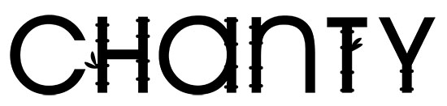
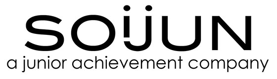
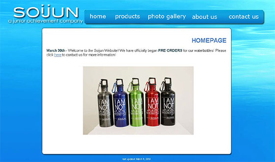
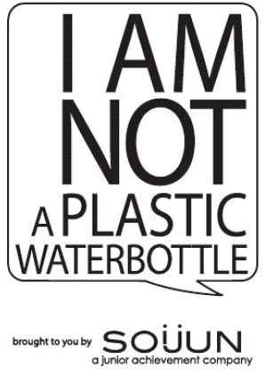
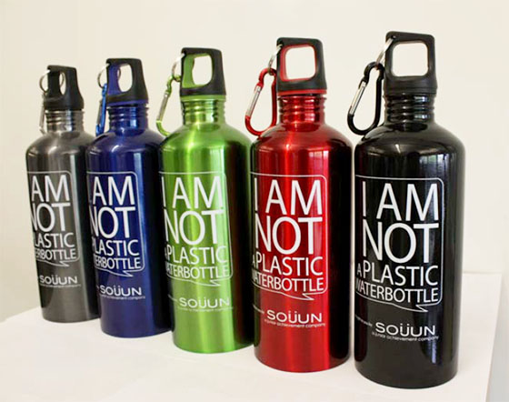
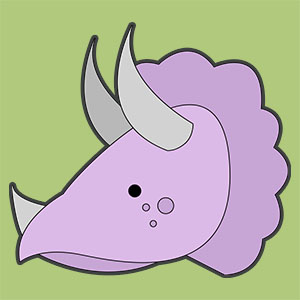

Branding
Chanty

Chanty is a bamboo-based clothing company.
Soijun

As Information Technology Vice President of my school's business club, I was required to create a logo to represent the club's product and brand. Our company's name was "Soijun". "Soi" sounded like the Chinese word for water, and "jun" meant bottle. The I and J of the words combined to create a smiling face, representing the upbeat, and happy nature of the company. After creating the logo, I was put in charge of designing and coding a quick website for the product.


Once we had an actual product, we also needed to create the actual design to be printed on the waterbottles. The raw design appeared as shown above.

We decided to print the final product in 5 colours.
Game Icon

I was approached to create a small dinosaur icon for an game application for the iOS store.